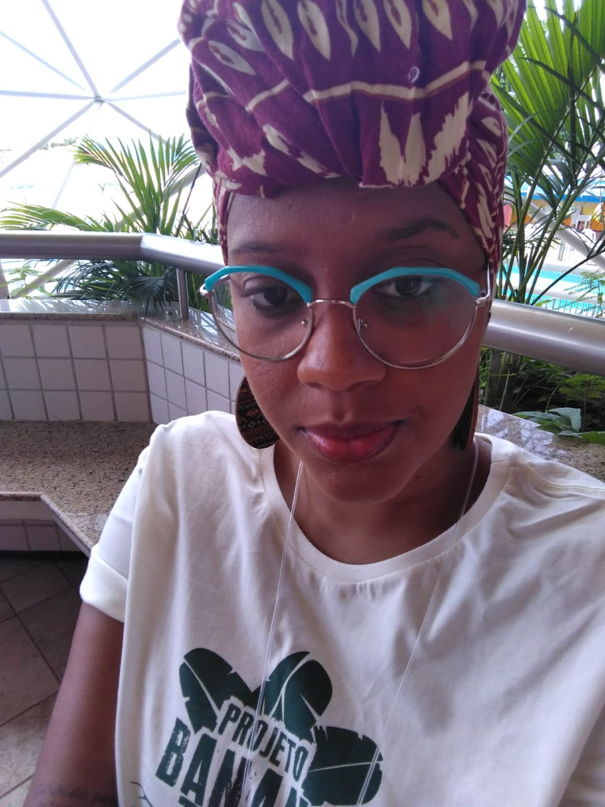

Melinda Carvalho
Desenvolvedora em Formação
Mulher, preta, mãe solo, graduada em Sociologia pela Universidade Federal do Recôncavo da Bahia (UFB), MBA em Gestão de Negocios de Impacto Social, desenvolvedora em formação.